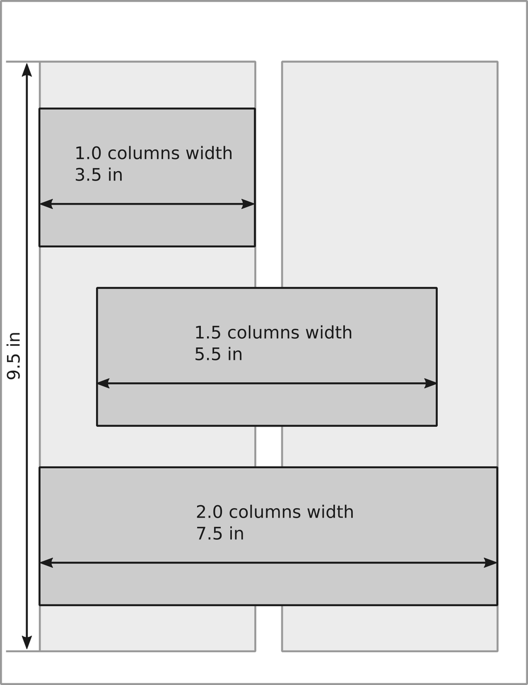

Technical writing: Using Figures
In a previous post I mentioned some general aspects of technical writing. In this one, I would like to talk about including figures in technical documents.
This post is about some details on the planning of figures for technical documents. The main document in mind is a technical article (research paper, techincal report). Although, it also applies to presentations or posters.
Graphic formats
First, I should mention that there are two main types of graphics, namely:
vector graphics; and
raster graphics.
They serve different purposes and we should use them accordingly. For example, for diagrams or schematics is better to use vector formats, in general. On the other hand, raster formats are better suited for images such as photographs or illustrations.
Vector graphics
A vector image is an image that is made up of geometric entities. In this case, the stored information is not point-to-point but the construction of the shapes that constitute it. For this reason, these images don't pixelate because the information you have is how to build it. This type of images is the best options for schematics and diagrams, since the only stored information are the strokes and text added to them. The de facto standard for this type of images is PDF —it is the one I usually include in my documents \(\LaTeX\). Although PDF is the standard, the preferred format is SVG (Scalable Vector Graphics) which is a standard across the internet and most modern browsers let you render them.
Raster graphics
A raster image is an image which is represented by an array (or rectangular grid) of pixels. In other words, the color information that there are in each point of the image. The most popular formats store the compressed information. For high contrast graphics (such as schematics or diagrams) the best format is PNG. If you have an animation, GIF would be preferable. And in the case of photographs it is better to use JPG.
Summary for formats
Summarizing, we should use JPG images (only) for photographs and SVG for schematics/diagrams. Another attribute that may be useful is the management of layers. Having several layers gives you the option of stacking different types of information separately. For example, you can have the background, the image, and the annotations in different layers. This way you can modify only the part of the figure that concerns you. You can automate the translation of the annotations this way without much problem. Formats such as SVG let you have several layers. In the case of raster formats, we have the option to use TIFF.
Regarding software to generate/edit this type of images I must say that there are a large number of programs that allow exporting to these formats: Python/Matplotlib, Matlab, Inkscape, Adobe Illustrator, GIMP, Photoshop, LibreOffice. If the graph is generated from a calculation or a data series I use Matplotlib. If, instead, we want to make a schematic my tool of choice is Inkscape. This program is intended to be a free alternative to programs like Adobe Illustrator —and it does achieve it. Obviously, you could use Illustrator or Corel Draw for this task. If the only use would be to make technical schematics, I think it would be a waste.
Designing figures for documents
I suggest starting from the nominal size of the figure in the document. For most of our documents, the figures will remain digital and this might seem counterintuitive. Nevertheless, I find this approach much easier. One of the reasons is that we still embed our figure in a document with a nominal size. Also, when thinking about font size it is common that we have as reference printed text. On top of that, we should consider that the human eye has a resolution limit, so we can't just scale down our figures.
Also, there is no such thing as resolution of a digital image. Resolution refers to a density of pixels per unit length. This makes sense when printing images, but not in the digital case. Nevertheless, the figures have a nominal size and hence a nominal resolution. That is, the number of pixels in one direction divided by its nominal size. It is a good idea to consider a minimal resolution of 150 dpi (dots per inch). For example, an image of 6 in × 3 in. This image would have a size of (at 150 dpi) of de 900 px × 450 px.
The following Python snippet creates a figure of size 6 in × 3 in, and plots the function \(f(x) = \sin(x^2)\) and stores it as an image of size 900 in × 450 in.
import numpy as np import matplotlib.pyplot as plt x = np.linspace(0, 2*np.pi, 500, linewidth=2) y = np.sin(x**2) plt.figure(figsize=(6, 3)) plt.plot(x, y) plt.xlabel("x", fontsize=10) plt.ylabel("y", fontsize=10) plt.savefig("fig_ex_python.png", dpi)
And the following in Matlab.
fig = figure(1); fig.Units = 'inches'; fig.Position(3:4) = [6 4]; x = linspace(0, 2*pi, 500); y = sin(x.^2); plot(x, y, 'LineWidth', 2); xlabel('x', 'FontSize', 10) ylabel('y', 'FontSize', 10) set(fig, 'PaperSize', [6,4]); print(fig,'fig_ex_matlab', '-dpng', '-r150');
Following I summarize some sizes for articles, posters and slides.
Articles
For an article is common to use letter size that is 8.5 in × 11 in (215.9 mm × 279.4 mm). Another common size is A4 that is 210 mm × 297 mm (8.27 in × 11.7 in).
A guideline for common sizes is the following:
1.0 columns width: 90 mm (3.5 in);
1.5 columns width: 140 mm (5.5 in);
2.0 columns width: 190 mm (6.5 in);
and depicted in the following image.
If we consider a resolution of 300 dpi, we have the following number of pixels horizontally
1.0 columns width: 1050 pixels;
1.5 columns width: 1650 pixels; and
2.0 columns width: 1950 pixels.
Note that an HD display has 1920 pixels in the horizontal direction. That means that you need a HD display to be able to see that much pixels.
Regarding text size, it is common to have sizes between 8 and 12 pts for figures.
Posters
In the case of an A0 size paper (841 mm × 1189 mm, 33 in × 47 in) the sizes would be around:
1.0 columns width: 360 mm (14 in);
1.5 columns width: 560 mm (22 in); and
2.0 columns width: 760 mm (26 in).
Keep in mind that a poster might not fit into the two-column format. Although, I still find the reference for the size useful.
Regarding the size of fonts in posters it is a good idea to keep it over 24 pts (see reference 3).
Slides
In the case of slides there are two common aspect ratios 16:9 and 4:3. And, different software have different nominal sizes. The following table present the nominal sizes for LibreOffice Impress and MS Power Point.
16:9 |
4:3 |
|
|---|---|---|
LibreOffice Impress |
11.02 in × 6.20 in |
11.02 in × 8.00 in |
MS Power Point |
13.32 in × 7.50 in |
10.00 in × 7.50 in |
References
Matthew Butterick (2019). Butterick's Practical Typography. Second edition, Matthew Butterick.
Rougier, Nicolas P., Michael Droettboom, and Philip E. Bourne (2014). “Ten Simple Rules for Better Figures.” PLOS Computational Biology 10(9):e1003833. DOI: 10.1371/journal.pcbi.1003833.
Erren, Thomas C., and Philip E. Bourne. 2007. “Ten Simple Rules for a Good Poster Presentation.” PLOS Computational Biology 3(5):e102. DOI: 10.1371/journal.pcbi.0030102
Elsevier. (n.d.). "Artwork Overview." Retrieved November 1, 2021, from https://www.elsevier.com/authors/policies-and-guidelines/artwork-and-media-instructions/artwork-overview
Elsevier. (n.d.). "Artwork sizing." Retrieved November 1, 2021, from https://www.elsevier.com/authors/policies-and-guidelines/artwork-and-media-instructions/artwork-sizing
Journal of applied physics (n.d.). "Preparing Your Manuscript: Authors Instruction." Retrieved November 1, 2021, from https://aip.scitation.org/jap/authors/manuscript
Comments
Comments powered by Disqus